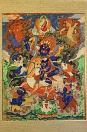

Палден Лхамо на тибетском или Шри Деви на санскрите. Палден Лхамо гневное женское божество, одна из восьми основных дхармапал, гневное воплощение богини Сарасвати.
В иконографии Палден Лхамо изображается в виде всадницы на белом или жёлтом осле. У неё три глаза, сине-черная кожа и огненные волосы. В одной руке у неё дубина с ваджрой, а в другой она держит чашу из черепа (капалу). Одежда ее состоит из тигровой юбки, на ней есть также бусы из человеческих голов. Её причёска украшена золотым полумесяцем, а на голове корона с пятью черепами. В ушах серьги с подвесками. Левая подвеска изображается в виде змеи, что символизирует ночь и водную стихию. Правая подвеска изображает льва, что символизирует день и солнце. На животе ее на цепи из костяных бусин есть подвеска в виде красного солнца в золотых лучах, или в виде колеса Дхармы.
На тханках вверху обычно изображается богиня мудрости и красноречия Сарасвати, а в четырех углах тханки - повелительницы времен года: весны - Васанта Раджни; лета - Варша Раджни; осени - Шарад Раджни и зимы - Хеманта Раджни. Палден Лхамо является дхармапалой из разряда “ушедших за пределы шести сфер существования”.Она главное охранительное божество тибетских школ «новых тантр». Считается, что ей подчиняются демоны кладбищ и плотоядные демоны.
Палден Лхамо исцеляет от всех болезней, является хранительницей тайн жизни и смерти. Также она хозяйка времени.